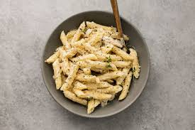

creamy chicken pasta

ingedients
- 300 grams dreied penne
- 2 tablespoon olive oil
- 1 garlic clove, crushed
- 75 grams baby spinach leaves
- 250 grams soft cheese
- 24 grams of parmesean, optional
- 4 cooked chicken breasts (about 450 grams)
- 100 grams frozen peas
- 1 small bunch of coriander, leaves chopped
- 50 grams ground almonds
- small bunch of parsley, or basil, chopped
steps
- Cook the pasta following pack instructions. Reserve 100ml of the water and drain the pasta in a colander.
- Meanwhile, heat the oil in a frying pan on a medium heat and fry the garlic and spinach for 3 mins until wilted. Add the soft cheese and heat until melted. Stir in most of the parmesan, then add the shredded chicken, peas and some of the pasta water. Bring to the boil and bubble for 2-3 mins until the chicken and peas are completely heated through.
- Add the pasta and stir until combined. Add more pasta water to loosen the sauce, if needed. Remove from heat, sprinkle over the remaining parmesan and parsley or basil to serve.
other recipes